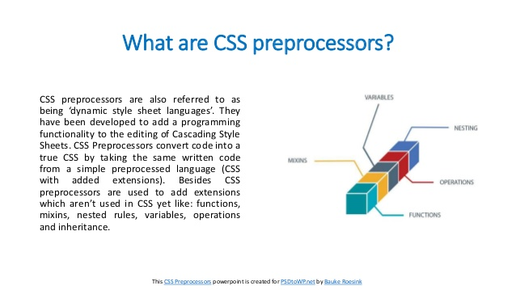
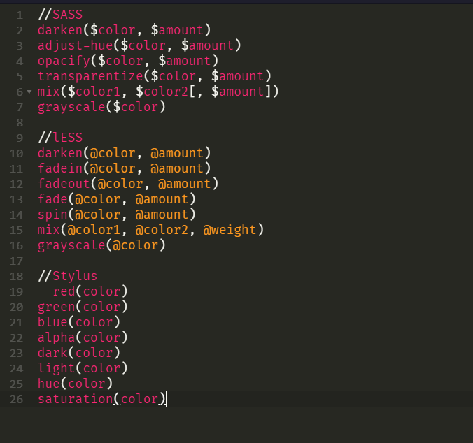

CSS Preprocessors
CSS Preprocessors are essential part of the development life of the developer in making program.Indeed, it extends CSS with variables, operators, interpolations, functions, mixins,etc,. Pre-processors helped to achieve writing reusable, maintainable and extensible codes in CSS and it can easily increase the productivity, and decrease the amount of code you are doing in the project. Example of this are SASS,LESS,STYLUS.Pre-processors generate CSS using custom language syntax that typically includes features that don't exist in pure CSS(e.g,variables,control flows,nesting,mixins,function). It is the combination of language syntax and compiled.
Pre-processors have different syntax like every programming langugae,the LESS,SASS,STYLUS where Stylus have additional styles. In SASS, you can omit curly brackets and semicolon, whereas in Stylus, you can also omit colons. and these are optional in both SASS and Stylus.
Variables

Nesting


Color Operations
CSS Framework
CSS Framework provides predefined CSS design functionality that can be reused,extended,or customized.Example of this are Bootstrap,Foundation,Materialize,etc,. Those framework allows deeveloper for easier, more standards-compliant web design using the Cascading Style Sheets language
Bootstrap

Foundation
Foundation is one of the advanced front-end frameworks that is used by developer in designing responsive websites and works on all types of devices.Foundation framework providesHTML, CSS and JavaScript plugin.
Materialize

But the most popular framework is Bootstrap, it uses HTML, CSS and jQuery to make responsive web pages.
Reference: https://htmlmag.com/article/an-introduction-to-css-preprocessors-sass-less-stylus